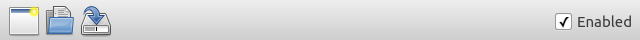

ToolButton QML Type
Provides a button type that is typically used within a ToolBar. More...
| Import Statement: | import QtQuick.Controls 1.4 |
| Since: | Qt 5.1 |
| Inherits: |
Detailed Description

ToolButton is functionally similar to Button, but can provide a look that is more suitable within a ToolBar.
ApplicationWindow {
...
toolBar: ToolBar {
RowLayout {
ToolButton {
iconSource: "new.png"
}
ToolButton {
iconSource: "open.png"
}
ToolButton {
iconSource: "save-as.png"
}
Item { Layout.fillWidth: true }
CheckBox {
text: "Enabled"
checked: true
}
}
}
}
You can create a custom appearance for a ToolButton by assigning a ButtonStyle.